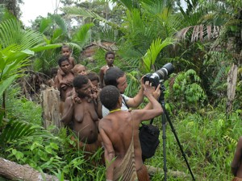

Navigation
 ČESKÁ verze
ČESKÁ verze- The best of New Guinea
- PNG & West Papua
- Today cannibals
- First Contact expedition
- Tribe Expedition
- Carstensz Pyramid - Top of Papua
- Korowai & Kombai tribe – Papua Tree people tribes
- Korowai Batu & Kopkaga - tree people
- Asmat tribe – the Papuan cannibals
- Yali tribe
- Mamberamo river of West Papua
- Dani tribe in Baliem Valley
- Lani tribe in Baliem Valley
- Wamena as a first contact place on West Papua highlands
- Papua New Guinea
- Goroka Show & Mt. Hagen Show
- Asaro Mudman
- Huli tribe – the wig-men
- Why to go with us
- The films from our expeditions
- More photos
- References
- Papua Postcards
- Papua Internet
- Links
- Contact us
- Download
Tree People, Korowai
.JPG)
Tree people – Korowai, an old man Photo©Petr Jahoda
.JPG)
Tree people – Korowai, Mum and her baby Photo©Petr Jahoda
.JPG)
Tree house Photo©Petr Jahoda
more photos from Tree People Korowai Expedition 2015 can be found here
Schedule
2016
Jul 24 – Aug 8, 2016, code – strom-0160724
Sep 25 – Oct 9, 2016, code – strom-0160925
Oct 23 – Nov 6, 2016, code – strom-0161023
Nov 20 – Dec 4, 2016, code – strom-0161120
Itinerary
Day 1: Participants meet at Jakarta airport (Indonesia) in
the late evening hours. Then depart for Papua.
Day 2: Trekking to Sentani waterfall (Jayapura), arrangement of
the necessary permits for Papua. Alternatively, relaxation at the hotel swimming
pool.
Day 3: Departure by a regular flight, then hiring motor boats
and going up the beautiful river sceneries to a lowland jungle. We hire porters
and trek to the first Tree People village. Then spend the night in the
village.
Day 4 – 11: Trekking across the territories of Korowai and
Kombai tribes. We observe the life and work of Tree People tribes – Korowai.
Day 12 – 13: Departure with a hired plane for Wamena – Baliem valley, Wamena sightseeing, local
marketplace and visit of Lani tribe
(short show). Visit of Dani tribe villages: Mummy in Jiwica, making fire, pig
roasting, fascinating battle reconstruction, dances, songs, trip to a salt lake
and the observation of how salt is “mined” using stems of banana palms.
Day 14: Departure by plane for Sentani (Jayapura), the capital
of Indonesian province Papua. Sightseeing and shopping of souvenirs at the
Hamadi market, then departure for Jakarta – participants who have connecting
flights leave, the others spend the night in Jakarta and leave the
following day.
OPTIONALLY: There is the possibility to extend the stay for diving in the north of Sulawesi (Manado-Bunaken Island and Lembeh Strait are some of the best places in the world to dive. Even National Geographic has reported on Lembeh Strait – 11/2005). It is also possible to dive directly in the western part of Papua, which is perhaps the best diving place in the world. It has got this name because of its beautiful variety of coral reefs, the quantity and variety of fish species, and the multitude of other sea animals, including 8 species of pygmy sea horses. A week long visit comes with a guarantee of Manatee observation – fantastic experience. Please contact us for further information. For our clients, we organize diving trips for the standard prices of the local dive shops. We recommend only the really good, and well-tried ones.
.jpg)
Korowai – living in a tree house Photo©Petr Jahoda

Trekking through the forest is difficult and „wet“ – Brazilian cameraman filming Korowai tribe atracts attention Photo©Petr Jahoda
The price includes:
All accommodation in local mid-range quality hotels (during the trek in huts of the aborigines or in your tents), all inland transportation, air transportation from and to Wamena, travelling by hired river motorboats, a possible boating trip in gouged boats made by aborigines, 1 porter per person needed during trekking, an English speaking guide with a very good knowledge of the local environment, and where needed also a local guide. The price also includes safety expedition equipment: satellite navigational GPS system and a satellite phone. Our clients can use the satellite telephone for private calls (note that this requires your guide’s consent).
The price does not include:
The flight ticket to Asia (Jakarta) and back,the flight ticket from Jakarta to the Papua province Indonesia (Jayapura – Sentani) and back to Jakarta, food, entrance fees to attractions, and additional fees for taking photos and filming, extra porters.